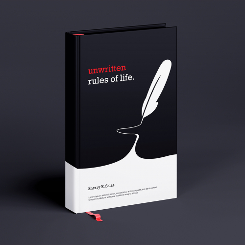

|  | I'm currently working with this book on how to have a disciplined nature. I've been disconnected from my true self for more than two decades, this book is helping me worh through the habitualways I used to use my time in daily living that wasn't healthy. I've set a goal to work on the exercises in this book for 2 hours every day. |
| This book truly helped me to become aware of my surrounding, all the thing thats making me imprisoned to what we call 'Matrix'. I've been enlightened with the world and and society of how it actually works. | |
| In terms of Business Planning, this book gave me knowledge on different ways on how to start, run, and expand a business. Starting a business with a bunch of plan and readiness gives you more efficacy and percentage on achieving your goal and getting high percentage of success. |